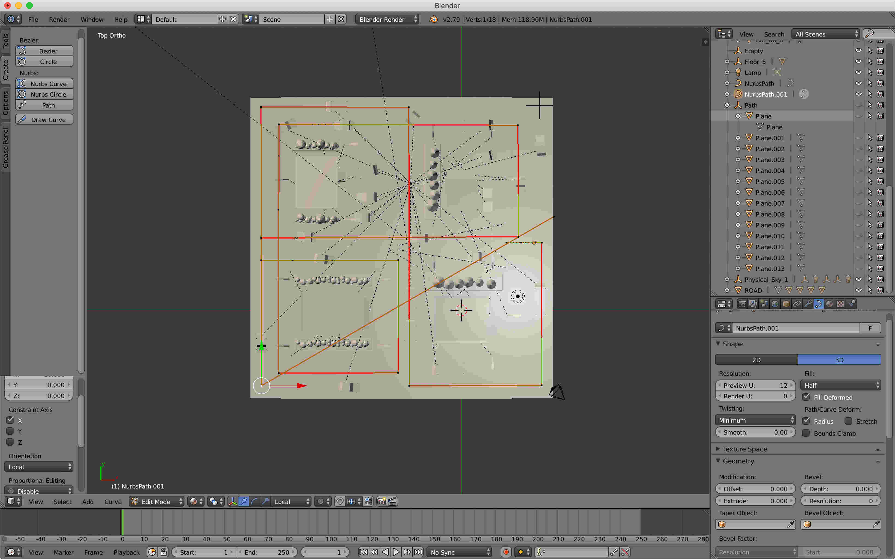
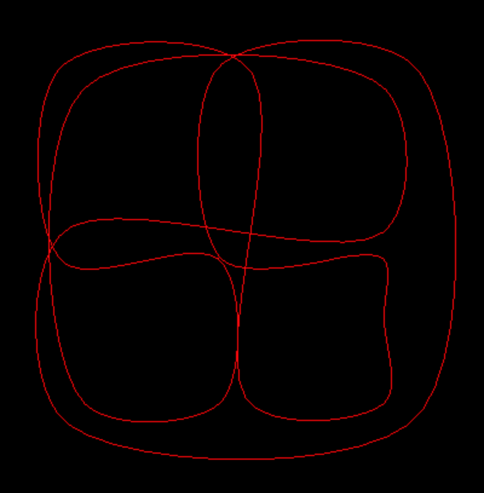
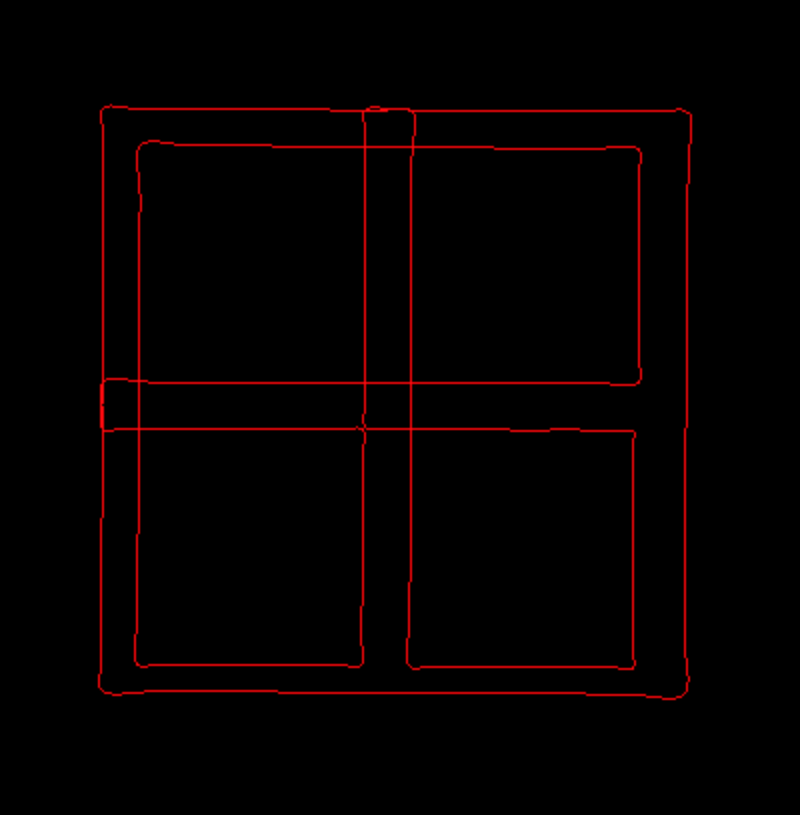
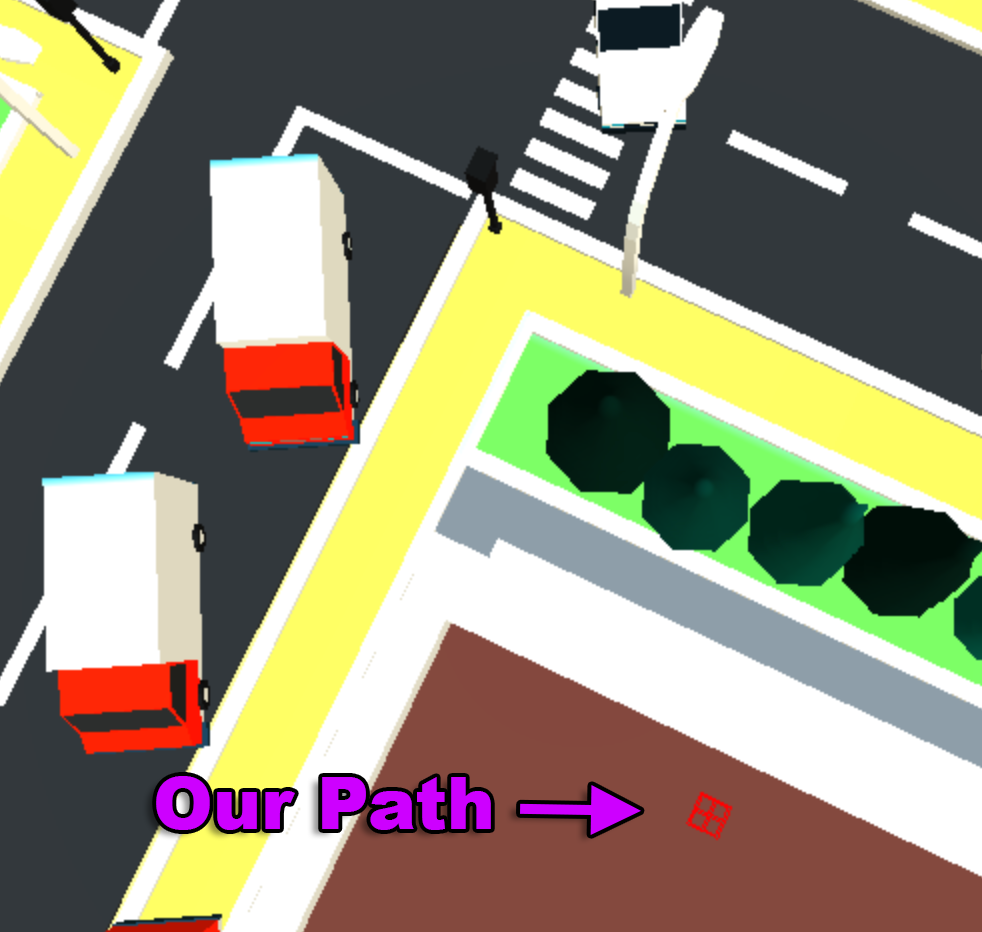
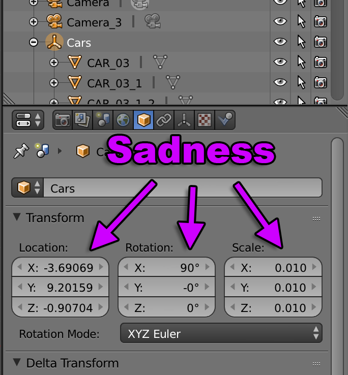

加载.GLTF文件
在上一课中我们加载了.OBJ文件。如果 你还没有读过它，你可能想先检查一下。
正如那里指出的那样，.OBJ 文件格式非常古老并且相当古老 简单。它不提供场景图，因此加载的所有内容都是一大块 网格。它主要被设计为一种在之间传递数据的简单方法 3D 编辑器.
gLTF 格式实际上是 一种从头开始设计的用于显示的格式 图形。 3D 格式可分为 3 或 4 种基本类型。
3D 编辑器格式
这是特定于单个应用程序的格式。 .blend（搅拌机）、.max（3d Studio Max）、 .mb 和 .ma (Maya) 等...
交换格式
这些格式如.OBJ、.DAE (Collada)、.FBX。它们旨在帮助交流 3D 编辑器之间的信息。因此，它们通常比需要的大得多 仅在3D编辑器中使用的额外信息
应用程序格式
这些通常特定于某些应用程序，通常是游戏。
传输格式
gLTF可能是第一个真正的传输格式。我想VRML可能会被考虑 但 VRML 实际上是一种相当糟糕的格式。
gLTF 旨在做一些其他格式做不到的事情
传输小
例如，这意味着它们的大部分大数据（如顶点）存储在 二进制。当您下载 .gLTF 文件时，数据可以上传到 GPU 零处理。它已经准备好了。这与 VRML、.OBJ、 或 .DAE，其中顶点存储为文本并且必须进行解析。文本顶点 位置很容易比二进制大 3 到 5 倍。
准备渲染
这又与其他格式不同，除了应用程序格式。数据 glTF 文件中的内容是要渲染的，而不是编辑的。不重要的数据 渲染通常已被删除。多边形已转换为三角形。 材料具有应该在任何地方都可以使用的已知值。
gLTF 是专门设计的，因此您应该能够下载 glTF 文件并 以最少的麻烦来显示它。让我们祈祷事实确实如此 因为没有其他格式能够做到这一点。
我不太确定我应该展示什么。在某种程度上加载并显示 gLTF 文件 比 .OBJ 文件更简单。与 .OBJ 文件不同，材料直接是格式的一部分。 也就是说，我认为我至少应该加载一个，并且我认为回顾一下我遇到的问题 可能会提供一些很好的信息。
在网上搜索我发现这个低多边形城市 作者：antonmoek 看起来如果我们幸运的话 可能是一个很好的例子。

从 .OBJ 文章中的示例开始，我删除了代码 用于加载.OBJ并将其替换为用于加载.GLTF
旧的.OBJ代码是
const mtlLoader = new MTLLoader();
mtlLoader.loadMtl('resources/models/windmill/windmill-fixed.mtl', (mtl) => {
mtl.preload();
mtl.materials.Material.side = THREE.DoubleSide;
objLoader.setMaterials(mtl);
objLoader.load('resources/models/windmill/windmill.obj', (event) => {
const root = event.detail.loaderRootNode;
scene.add(root);
...
});
});
新的.GLTF代码是
{
const gltfLoader = new GLTFLoader();
const url = 'resources/models/cartoon_lowpoly_small_city_free_pack/scene.gltf';
gltfLoader.load(url, (gltf) => {
const root = gltf.scene;
scene.add(root);
...
});
我像以前一样保留了自动成帧代码
我们还需要包括GLTFLoader 我们可以摆脱OBJLoader.
-import {LoaderSupport} from 'three/addons/loaders/LoaderSupport.js';
-import {OBJLoader} from 'three/addons/loaders/OBJLoader.js';
-import {MTLLoader} from 'three/addons/loaders/MTLLoader.js';
+import {GLTFLoader} from 'three/addons/loaders/GLTFLoader.js';
并运行我们获得
魔法！它只是工作，纹理和所有。
接下来我想看看我是否可以动画汽车行驶所以 我需要检查场景中的汽车是否是独立的实体 如果它们以某种方式设置，我可以使用它们。
我编写了一些代码将场景图转储到 JavaScript 控制台。
这是打印场景图的代码。
function dumpObject(obj, lines = [], isLast = true, prefix = '') {
const localPrefix = isLast ? '└─' : '├─';
lines.push(`${prefix}${prefix ? localPrefix : ''}${obj.name || '*no-name*'} [${obj.type}]`);
const newPrefix = prefix + (isLast ? ' ' : '│ ');
const lastNdx = obj.children.length - 1;
obj.children.forEach((child, ndx) => {
const isLast = ndx === lastNdx;
dumpObject(child, lines, isLast, newPrefix);
});
return lines;
}
我在加载场景后立即调用了它。
const gltfLoader = new GLTFLoader();
gltfLoader.load('resources/models/cartoon_lowpoly_small_city_free_pack/scene.gltf', (gltf) => {
const root = gltf.scene;
scene.add(root);
console.log(dumpObject(root).join('\n'));
运行我得到了这个列表
OSG_Scene [Scene]
└─RootNode_(gltf_orientation_matrix) [Object3D]
└─RootNode_(model_correction_matrix) [Object3D]
└─4d4100bcb1c640e69699a87140df79d7fbx [Object3D]
└─RootNode [Object3D]
│ ...
├─Cars [Object3D]
│ ├─CAR_03_1 [Object3D]
│ │ └─CAR_03_1_World_ap_0 [Mesh]
│ ├─CAR_03 [Object3D]
│ │ └─CAR_03_World_ap_0 [Mesh]
│ ├─Car_04 [Object3D]
│ │ └─Car_04_World_ap_0 [Mesh]
│ ├─CAR_03_2 [Object3D]
│ │ └─CAR_03_2_World_ap_0 [Mesh]
│ ├─Car_04_1 [Object3D]
│ │ └─Car_04_1_World_ap_0 [Mesh]
│ ├─Car_04_2 [Object3D]
│ │ └─Car_04_2_World_ap_0 [Mesh]
│ ├─Car_04_3 [Object3D]
│ │ └─Car_04_3_World_ap_0 [Mesh]
│ ├─Car_04_4 [Object3D]
│ │ └─Car_04_4_World_ap_0 [Mesh]
│ ├─Car_08_4 [Object3D]
│ │ └─Car_08_4_World_ap8_0 [Mesh]
│ ├─Car_08_3 [Object3D]
│ │ └─Car_08_3_World_ap9_0 [Mesh]
│ ├─Car_04_1_2 [Object3D]
│ │ └─Car_04_1_2_World_ap_0 [Mesh]
│ ├─Car_08_2 [Object3D]
│ │ └─Car_08_2_World_ap11_0 [Mesh]
│ ├─CAR_03_1_2 [Object3D]
│ │ └─CAR_03_1_2_World_ap_0 [Mesh]
│ ├─CAR_03_2_2 [Object3D]
│ │ └─CAR_03_2_2_World_ap_0 [Mesh]
│ ├─Car_04_2_2 [Object3D]
│ │ └─Car_04_2_2_World_ap_0 [Mesh]
...
从中我们可以看到所有的汽车发生了在父母之下
称为 "Cars"
* ├─Cars [Object3D]
│ ├─CAR_03_1 [Object3D]
│ │ └─CAR_03_1_World_ap_0 [Mesh]
│ ├─CAR_03 [Object3D]
│ │ └─CAR_03_World_ap_0 [Mesh]
│ ├─Car_04 [Object3D]
│ │ └─Car_04_World_ap_0 [Mesh]
所以作为一个简单的测试，我想我会尝试旋转 “Cars”节点围绕其 Y 轴的所有子节点。
加载场景后我查找了“汽车”节点 并保存结果。
+let cars;
{
const gltfLoader = new GLTFLoader();
gltfLoader.load('resources/models/cartoon_lowpoly_small_city_free_pack/scene.gltf', (gltf) => {
const root = gltf.scene;
scene.add(root);
+ cars = root.getObjectByName('Cars');
然后在render函数中我们可以设置旋转
cars.
+function render(time) {
+ time *= 0.001; // convert to seconds
if (resizeRendererToDisplaySize(renderer)) {
const canvas = renderer.domElement;
camera.aspect = canvas.clientWidth / canvas.clientHeight;
camera.updateProjectionMatrix();
}
+ if (cars) {
+ for (const car of cars.children) {
+ car.rotation.y = time;
+ }
+ }
renderer.render(scene, camera);
requestAnimationFrame(render);
}
的每个孩子的
嗯，不幸的是这个场景看起来并不是为了 为汽车设置动画，因为它们的起源不是为此目的而设置的。 卡车朝错误的方向旋转。
这提出了一个重要的观点，即如果您要 在 3D 中做一些事情，您需要提前计划并设计您的资产 所以它们的起源在正确的地方，所以它们是 正确的比例等
因为我不是艺术家，而且我不太了解搅拌机，所以我
将破解这个例子。我们将把每辆车带到
另一个Object3D。然后我们将移动这些 Object3D 对象
移动汽车，但我们可以单独设置汽车的原始位置
Object3D 重新定位它，以便它位于我们真正需要它的位置。
回顾一下列出的场景图，它看起来像在那里 实际上只有 3 种类型的汽车：“Car_08”、“CAR_03”和“Car_04”。 希望每种类型的汽车都能进行相同的调整。
我编写了这段代码来遍历每辆车，将其父级设置为新的
Object3D，将新的Object3D作为场景的父级，然后应用
每辆车的一些类型设置来固定其方向，并添加
新的 Object3D cars 数组。
-let cars;
+const cars = [];
{
const gltfLoader = new GLTFLoader();
gltfLoader.load('resources/models/cartoon_lowpoly_small_city_free_pack/scene.gltf', (gltf) => {
const root = gltf.scene;
scene.add(root);
- cars = root.getObjectByName('Cars');
+ const loadedCars = root.getObjectByName('Cars');
+ const fixes = [
+ { prefix: 'Car_08', rot: [Math.PI * .5, 0, Math.PI * .5], },
+ { prefix: 'CAR_03', rot: [0, Math.PI, 0], },
+ { prefix: 'Car_04', rot: [0, Math.PI, 0], },
+ ];
+
+ root.updateMatrixWorld();
+ for (const car of loadedCars.children.slice()) {
+ const fix = fixes.find(fix => car.name.startsWith(fix.prefix));
+ const obj = new THREE.Object3D();
+ car.getWorldPosition(obj.position);
+ car.position.set(0, 0, 0);
+ car.rotation.set(...fix.rot);
+ obj.add(car);
+ scene.add(obj);
+ cars.push(obj);
+ }
...
这修复了汽车的方向。
现在让我们驾驶它们。
即使是制作一个简单的驾驶系统对于这篇文章来说也太多了，但是 看来我们可以只走一条曲折的路 沿着所有道路行驶，然后将汽车放在道路上。 这是一张来自 Blender 的图片，大约是构建过程的一半 路径.

我需要一种方法来从 Blender 中获取该路径的数据。 幸运的是，我能够仅选择我的路径并导出 .OBJ 检查“写入 nurbs”。

打开 .OBJ 文件我能够获得点列表 我将其格式化为 this
const controlPoints = [ [1.118281, 5.115846, -3.681386], [3.948875, 5.115846, -3.641834], [3.960072, 5.115846, -0.240352], [3.985447, 5.115846, 4.585005], [-3.793631, 5.115846, 4.585006], [-3.826839, 5.115846, -14.736200], [-14.542292, 5.115846, -14.765865], [-14.520929, 5.115846, -3.627002], [-5.452815, 5.115846, -3.634418], [-5.467251, 5.115846, 4.549161], [-13.266233, 5.115846, 4.567083], [-13.250067, 5.115846, -13.499271], [4.081842, 5.115846, -13.435463], [4.125436, 5.115846, -5.334928], [-14.521364, 5.115846, -5.239871], [-14.510466, 5.115846, 5.486727], [5.745666, 5.115846, 5.510492], [5.787942, 5.115846, -14.728308], [-5.423720, 5.115846, -14.761919], [-5.373599, 5.115846, -3.704133], [1.004861, 5.115846, -3.641834], ];
THREE.js 有一些曲线类。 CatmullRomCurve3 似乎
就像它可能有用一样。这种曲线的特点是
它试图制作一条穿过这些点的平滑曲线。
事实上，直接将这些点放入将生成 像这样的曲线

但我们想要一个更尖的角。看起来如果我们计算
一些额外的积分我们可以得到我们想要的。对于每对
我们将计算 10% 的点
这 2 个点以及这 2 个点之间的另外 90%
并将结果传递给 CatmullRomCurve3.
这会给我们一条像这样的曲线

这里是制作曲线的代码
let curve;
let curveObject;
{
const controlPoints = [
[1.118281, 5.115846, -3.681386],
[3.948875, 5.115846, -3.641834],
[3.960072, 5.115846, -0.240352],
[3.985447, 5.115846, 4.585005],
[-3.793631, 5.115846, 4.585006],
[-3.826839, 5.115846, -14.736200],
[-14.542292, 5.115846, -14.765865],
[-14.520929, 5.115846, -3.627002],
[-5.452815, 5.115846, -3.634418],
[-5.467251, 5.115846, 4.549161],
[-13.266233, 5.115846, 4.567083],
[-13.250067, 5.115846, -13.499271],
[4.081842, 5.115846, -13.435463],
[4.125436, 5.115846, -5.334928],
[-14.521364, 5.115846, -5.239871],
[-14.510466, 5.115846, 5.486727],
[5.745666, 5.115846, 5.510492],
[5.787942, 5.115846, -14.728308],
[-5.423720, 5.115846, -14.761919],
[-5.373599, 5.115846, -3.704133],
[1.004861, 5.115846, -3.641834],
];
const p0 = new THREE.Vector3();
const p1 = new THREE.Vector3();
curve = new THREE.CatmullRomCurve3(
controlPoints.map((p, ndx) => {
p0.set(...p);
p1.set(...controlPoints[(ndx + 1) % controlPoints.length]);
return [
(new THREE.Vector3()).copy(p0),
(new THREE.Vector3()).lerpVectors(p0, p1, 0.1),
(new THREE.Vector3()).lerpVectors(p0, p1, 0.9),
];
}).flat(),
true,
);
{
const points = curve.getPoints(250);
const geometry = new THREE.BufferGeometry().setFromPoints(points);
const material = new THREE.LineBasicMaterial({color: 0xff0000});
curveObject = new THREE.Line(geometry, material);
scene.add(curveObject);
}
}
该代码的第一部分制作了一条曲线。 该代码的第二部分生成 250 分 根据曲线，然后创建一个要显示的对象 连接这 250 个点所形成的线。
Running 示例 我没有看到 曲线。为了使其可见，我让它忽略深度测试并且 最后渲染
curveObject = new THREE.Line(geometry, material); + material.depthTest = false; + curveObject.renderOrder = 1;
就在那时我发现它太小了。

检查Blender中的层次结构我发现艺术家有 缩放所有汽车的父级节点。

缩放对于实时 3D 应用程序不利。会导致各种 问题并最终导致无尽的挫败感 实时 3D。艺术家常常不知道这一点，因为它是如此 在 3D 编辑程序中轻松缩放整个场景，但是 如果您决定制作实时 3D 应用程序，我建议您请求您的 艺术家永远不要缩放任何东西。如果他们改变规模 他们应该找到一种方法将该比例应用于顶点 这样当它最终进入您的应用程序时您可以忽略
而且，不仅仅是比例，在这种情况下，汽车会旋转和偏移
通过其父节点 Cars 节点。这将使运行时变得困难
在世界空间中移动汽车。需要明确的是，在这种情况下
我们希望汽车能够在世界空间中行驶，这就是为什么这些
问题即将出现。如果某些东西是要被操纵的
在局部空间，就像月球绕地球旋转一样
这不是一个问题。
回到我们上面编写的转储场景图的函数， 让我们转储每个节点的位置、旋转和缩放。
+function dumpVec3(v3, precision = 3) {
+ return `${v3.x.toFixed(precision)}, ${v3.y.toFixed(precision)}, ${v3.z.toFixed(precision)}`;
+}
function dumpObject(obj, lines, isLast = true, prefix = '') {
const localPrefix = isLast ? '└─' : '├─';
lines.push(`${prefix}${prefix ? localPrefix : ''}${obj.name || '*no-name*'} [${obj.type}]`);
+ const dataPrefix = obj.children.length
+ ? (isLast ? ' │ ' : '│ │ ')
+ : (isLast ? ' ' : '│ ');
+ lines.push(`${prefix}${dataPrefix} pos: ${dumpVec3(obj.position)}`);
+ lines.push(`${prefix}${dataPrefix} rot: ${dumpVec3(obj.rotation)}`);
+ lines.push(`${prefix}${dataPrefix} scl: ${dumpVec3(obj.scale)}`);
const newPrefix = prefix + (isLast ? ' ' : '│ ');
const lastNdx = obj.children.length - 1;
obj.children.forEach((child, ndx) => {
const isLast = ndx === lastNdx;
dumpObject(child, lines, isLast, newPrefix);
});
return lines;
}
以及运行它的结果
OSG_Scene [Scene]
│ pos: 0.000, 0.000, 0.000
│ rot: 0.000, 0.000, 0.000
│ scl: 1.000, 1.000, 1.000
└─RootNode_(gltf_orientation_matrix) [Object3D]
│ pos: 0.000, 0.000, 0.000
│ rot: -1.571, 0.000, 0.000
│ scl: 1.000, 1.000, 1.000
└─RootNode_(model_correction_matrix) [Object3D]
│ pos: 0.000, 0.000, 0.000
│ rot: 0.000, 0.000, 0.000
│ scl: 1.000, 1.000, 1.000
└─4d4100bcb1c640e69699a87140df79d7fbx [Object3D]
│ pos: 0.000, 0.000, 0.000
│ rot: 1.571, 0.000, 0.000
│ scl: 1.000, 1.000, 1.000
└─RootNode [Object3D]
│ pos: 0.000, 0.000, 0.000
│ rot: 0.000, 0.000, 0.000
│ scl: 1.000, 1.000, 1.000
├─Cars [Object3D]
* │ │ pos: -369.069, -90.704, -920.159
* │ │ rot: 0.000, 0.000, 0.000
* │ │ scl: 1.000, 1.000, 1.000
│ ├─CAR_03_1 [Object3D]
│ │ │ pos: 22.131, 14.663, -475.071
│ │ │ rot: -3.142, 0.732, 3.142
│ │ │ scl: 1.500, 1.500, 1.500
│ │ └─CAR_03_1_World_ap_0 [Mesh]
│ │ pos: 0.000, 0.000, 0.000
│ │ rot: 0.000, 0.000, 0.000
│ │ scl: 1.000, 1.000, 1.000
这表明原始场景中的Cars已经有了旋转和缩放
删除并应用于其子项。这表明无论出口商是什么
用于创建 .GLTF 文件在这里做了一些特殊的工作或更可能的是
艺术家导出的文件版本与相应的 .blend 版本不同
文件，这就是为什么事情不匹配的原因。
这样做的寓意是我应该下载 .blend 文件并导出我自己。在出口之前我应该检查一下 所有主要节点并删除任何转换。
顶部的所有这些节点
OSG_Scene [Scene]
│ pos: 0.000, 0.000, 0.000
│ rot: 0.000, 0.000, 0.000
│ scl: 1.000, 1.000, 1.000
└─RootNode_(gltf_orientation_matrix) [Object3D]
│ pos: 0.000, 0.000, 0.000
│ rot: -1.571, 0.000, 0.000
│ scl: 1.000, 1.000, 1.000
└─RootNode_(model_correction_matrix) [Object3D]
│ pos: 0.000, 0.000, 0.000
│ rot: 0.000, 0.000, 0.000
│ scl: 1.000, 1.000, 1.000
└─4d4100bcb1c640e69699a87140df79d7fbx [Object3D]
│ pos: 0.000, 0.000, 0.000
│ rot: 1.571, 0.000, 0.000
│ scl: 1.000, 1.000, 1.000
也是浪费。
理想情况下，场景将由一个没有位置的“根”节点组成， 旋转或缩放。在运行时我可以将所有的孩子从中拉出来 root 并将它们作为场景本身的父级。可能有根的孩子 就像“汽车”一样，它可以帮助我找到所有汽车，但理想情况下它也会有 无需平移、旋转或缩放，因此我可以将汽车重新设置为场景的父级 用最少的工作量.
无论如何，最快但可能不是最好的解决方法就是 调整我们用来查看曲线的对象。
这就是我最终得到的结果。
首先我调整了曲线的位置并找到了值 这似乎有效。然后我隐藏了它。
{
const points = curve.getPoints(250);
const geometry = new THREE.BufferGeometry().setFromPoints(points);
const material = new THREE.LineBasicMaterial({color: 0xff0000});
curveObject = new THREE.Line(geometry, material);
+ curveObject.scale.set(100, 100, 100);
+ curveObject.position.y = -621;
+ curveObject.visible = false;
material.depthTest = false;
curveObject.renderOrder = 1;
scene.add(curveObject);
}
然后我编写了代码来沿着曲线移动汽车。我们为每辆车选择一个
沿曲线从 0 到 1 的位置并使用以下命令计算世界空间中的点
curveObject 来变换点。然后我们再稍微挑一点
沿着曲线进一步下降。我们使用 lookAt 设置汽车的方向，并将
汽车位于两点之间的中点。
// create 2 Vector3s we can use for path calculations
const carPosition = new THREE.Vector3();
const carTarget = new THREE.Vector3();
function render(time) {
...
- for (const car of cars) {
- car.rotation.y = time;
- }
+ {
+ const pathTime = time * .01;
+ const targetOffset = 0.01;
+ cars.forEach((car, ndx) => {
+ // a number between 0 and 1 to evenly space the cars
+ const u = pathTime + ndx / cars.length;
+
+ // get the first point
+ curve.getPointAt(u % 1, carPosition);
+ carPosition.applyMatrix4(curveObject.matrixWorld);
+
+ // get a second point slightly further down the curve
+ curve.getPointAt((u + targetOffset) % 1, carTarget);
+ carTarget.applyMatrix4(curveObject.matrixWorld);
+
+ // put the car at the first point (temporarily)
+ car.position.copy(carPosition);
+ // point the car the second point
+ car.lookAt(carTarget);
+
+ // put the car between the 2 points
+ car.position.lerpVectors(carPosition, carTarget, 0.5);
+ });
+ }
当我运行它时，我发现了每种类型的汽车，它们高于原点的高度 设置不一致，所以我需要抵消每一个 一点.
const loadedCars = root.getObjectByName('Cars');
const fixes = [
- { prefix: 'Car_08', rot: [Math.PI * .5, 0, Math.PI * .5], },
- { prefix: 'CAR_03', rot: [0, Math.PI, 0], },
- { prefix: 'Car_04', rot: [0, Math.PI, 0], },
+ { prefix: 'Car_08', y: 0, rot: [Math.PI * .5, 0, Math.PI * .5], },
+ { prefix: 'CAR_03', y: 33, rot: [0, Math.PI, 0], },
+ { prefix: 'Car_04', y: 40, rot: [0, Math.PI, 0], },
];
root.updateMatrixWorld();
for (const car of loadedCars.children.slice()) {
const fix = fixes.find(fix => car.name.startsWith(fix.prefix));
const obj = new THREE.Object3D();
car.getWorldPosition(obj.position);
- car.position.set(0, 0, 0);
+ car.position.set(0, fix.y, 0);
car.rotation.set(...fix.rot);
obj.add(car);
scene.add(obj);
cars.push(obj);
}
结果.
几分钟的工作还不错.
我想做的最后一件事就是打开阴影.
为此我从DirectionalLight 阴影
有关阴影的文章中的示例并将其粘贴
进入我们最新的代码。
然后，加载后，我们需要打开所有对象上的阴影。
{
const gltfLoader = new GLTFLoader();
gltfLoader.load('resources/models/cartoon_lowpoly_small_city_free_pack/scene.gltf', (gltf) => {
const root = gltf.scene;
scene.add(root);
+ root.traverse((obj) => {
+ if (obj.castShadow !== undefined) {
+ obj.castShadow = true;
+ obj.receiveShadow = true;
+ }
+ });
然后我花了近4个小时试图找出阴影助手的原因 没有工作。这是因为我忘记用
renderer.shadowMap.enabled = true;
😭
启用阴影，然后我调整了这些值，直到我们的DirectionLight的阴影相机
有一个覆盖整个场景的视锥体。这些是设置
我最终得到了.
{
const color = 0xFFFFFF;
const intensity = 1;
const light = new THREE.DirectionalLight(color, intensity);
+ light.castShadow = true;
* light.position.set(-250, 800, -850);
* light.target.position.set(-550, 40, -450);
+ light.shadow.bias = -0.004;
+ light.shadow.mapSize.width = 2048;
+ light.shadow.mapSize.height = 2048;
scene.add(light);
scene.add(light.target);
+ const cam = light.shadow.camera;
+ cam.near = 1;
+ cam.far = 2000;
+ cam.left = -1500;
+ cam.right = 1500;
+ cam.top = 1500;
+ cam.bottom = -1500;
...
并且我将背景颜色设置为浅蓝色.
const scene = new THREE.Scene();
-scene.background = new THREE.Color('black');
+scene.background = new THREE.Color('#DEFEFF');
和...阴影
我希望浏览这个项目是有用的并展示了一些 解决一些加载问题的好例子 带有场景图的文件。
一件有趣的事情是将 .blend 文件与 .gltf 进行比较 文件，.blend 文件有几个灯光，但它们不是灯光 加载到场景后。 .GLTF 文件只是一个 JSON 文件，以便您可以轻松查看内部。它由几部分组成 事物数组，数组中的每个项目都通过索引引用 别的地方。虽然他们指出的作品有扩展 几乎所有 3d 格式都有问题。 他们永远无法覆盖所有 case.
始终需要更多数据。例如我们手动导出 汽车行驶的路径。理想情况下，该信息可能位于 .GLTF 文件，但要做到这一点，我们需要编写自己的导出器 以及一些如何标记节点以了解我们希望它们导出的方式或使用 命名方案或类似的东西来从中获取数据 无论我们使用什么工具将数据创建到我们的应用程序中。
所有这些都留给读者作为练习。